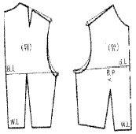
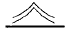
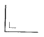
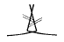
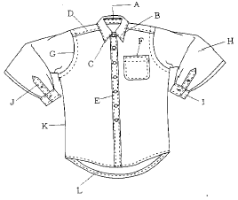

패션머천다이징산업기사 (2003-08-10 기출문제)
1과목: 패션마케팅
1. 패션 마케터가 고려할 수 있는 효과적인 표적시장 선택 전략은?
- 경쟁사가 차별적 마케팅전략을 쓸 경우에 자사에서는 비차별적 마케팅전략이 유리하다.
- 자원이 제한되어 있는 중소기업의 경우에는 경제성이 높은 집중적 마케팅 전략이 유리하다.
- 신제품 도입기에는 차별적 마케팅전략이, 제품의 성숙기에는 비차별적 마케팅전략이 유리하다.
- 제품의 동질성이 높은 경우에는 차별적 마케팅 전략이, 제품의 동질성이 낮은 경우에는 비차별적 마케팅 전략이 유리하다.
(정답률: 알수없음)

2. 브랜드 포지셔닝(Brand Positioning)의 의미는?
- 상가에서 매장이 위치한 위치
- 백화점에서 자기 브랜드가 위치한 위치
- 경쟁브랜드와 비교하여 고객의 마음속에 위치한 자기 브랜드의 위치
- 복종별 브랜드 구분에서 자사 브랜드의 위치
(정답률: 알수없음)
3. 점포전략의 개념과 가장 거리가 먼 것은?
- 스토아 아이덴티티
- 스토아 라이프스타일
- 스토아 컨셉
- 스토아 포지셔닝
(정답률: 알수없음)
4. 제조회사의 입장에서 본 위탁판매제도의 장점은?
- 기획에서 생산, 유통을 일괄되게 통제하기 쉽다.
- 재고부담이 없어 이익의 편차가 적다.
- 상품기획과 생산에만 전념할 수 있어 전문화가 가능하다.
- 상권 특성에 따른 물량배분으로 판매를 극대화 할 수 있다.
(정답률: 알수없음)
5. 여러 세분시장들 중 자사에게 가장 큰 경쟁우위를 제공하는 한 두 개의 세분시장을 표적시장으로 선정하여 높은 시장점유율을 추구하는 전략은?
- 비차별적 마케팅 전략
- 차별적 마케팅 전략
- 집중적 마케팅 전략
- 절충적 마케팅 전략
(정답률: 알수없음)
6. 다음 중 패션 바이어가 상품사입 시 고려해야 할 사항이 아닌 것은?
- 적절한 상품
- 적절한 시기
- 적절한 가격대
- 적절한 서비스
(정답률: 알수없음)
7. 판매시점에서 판매정보와 자료를 입력, 처리하여 그 결과를 경영의사 결정에 이용하는 시스템은?
- POP
- POS
- QRS
- EDI
(정답률: 알수없음)
8. 리테일 머천다이징과 제조업 머천다이징의 공통점과 차이점을 잘못 설명한 것은?
- 구매(사입)와 생산이라는 점에서 차이가 있다.
- 상품을 대상으로 한다는 점에서 공통점이 있다.
- 판매를 목표로 한다는 점에서 공통점이 있다.
- 상품기획과 상품관리라는 점에서 차이가 있다.
(정답률: 알수없음)
9. 고객이 원하는 제품과 서비스를 지속적, 체계적으로 제공하여 고객의 가치를 극대화하여 기업의 수익성을 높이고자 하는 고객관계 관리는?
- CRM
- SCM
- TQM
- STP
(정답률: 알수없음)
10. 머천다이저(merchandiser)란 상품기획부문의 총괄자로서상품계획에서 판매부문에 이르기까지 광범위한 직무 영역을 가지고 있다. 다음 중 머천다이저의 역할로서 가장 거리가 먼 것은?
- 정보분석 업무
- 상품기획 업무
- 판매 및 판매촉진 업무
- 디자인개발 업무
(정답률: 알수없음)
11. 윈도우 디스플레이는 점포가 취급하는 상품들이 다양해지고 판매기술이 발달함에 따라 단순히 상품을 진열하는 것에서 진일보하여 상품특성, 사용상황, 점포이미지 등을 전달하는데 유용한 수단으로 사용되고 있다. 다음 중 윈도우 디스플레이의 유형 중 특정 패션테마와 관련된 다양한 범주의 상품들이 한 공간안에 스토리 형태로 배열하는 디스플레이의 유형은?
- 싱글카테고리 디스플레이(single category display)
- 시리즈 디스플레이(series display)
- 릴레이티드 디스플레이(related display)
- 프로모셔널 이벤트 디스플레이(promotional event display)
(정답률: 알수없음)
12. 패션광고 매체의 매체별 장, 단점을 맞게 설명한 것은?
- TV는 깊이 있는 메시지의 전달이 힘들다.
- 잡지의 경우 독자층이 한정되지 않고 폭넓은 대상을 목적으로 할 수 있다.
- 신문은 광고의 수명이 길고 인쇄의 질이 높은 장점을 가져 효율적이다.
- 라디오는 표적청중이 한정적이지 않아 포괄적인 광고가 가능하다.
(정답률: 알수없음)
13. 미국의 마케팅 발전 과정 중 어떤 제품에 기업의 노력을 집중시킬 것인가, 새로운 상표의 런칭 등에 대한 의사 결정 등 기업의 마케팅 활동에 대한 포트폴리오를 중요시하게 된 시대는?
- 판매 지향 시대
- 마케팅 컨셉 시대
- 전략적 마케팅 시대
- 마케팅 정보 시스템 시대
(정답률: 알수없음)
14. 특정 제품 계열내의 각 제품이 제공하는 아이템(item)의 수를 나타내는 것으로 고유의 스타일 번호로 표현되는 것을 무엇이라 하는가?
- 제품믹스의 넓이(width)
- 제품믹스의 길이(length)
- 제품믹스의 깊이(depth)
- 제품믹스의 굵기(thickness)
(정답률: 알수없음)
15. 패션 머천다이저의 유형 가운데 디자이너를 상품기획에 적극 참여시키고 상호 협력하는 타입으로 가장 바람직한 유형은?
- 상인형 머천다이저
- 계수관리형 머천다이저
- 감각인간형 머천다이저
- 고감도형 머천다이저
(정답률: 알수없음)
16. 다음은 패션머천다이징 컨셉 전략에 관한 설명이다. 틀린 것은?
- 자사의 브랜드 이미지에 적합하게 설정되어야 한다.
- 패션 마케팅 정보를 적극 활용하여야 한다.
- 전체 소비자를 만족시킬 수 있도록 하여야 한다
- 고부가가치를 창출할 수 있어야 한다.
(정답률: 알수없음)
17. 랄프로렌이나 쌍방울의 키이스와 같은 이미지 브랜드의 경우 적합한 상품군의 구성은?
- 시즌별로 유행에 맞춰 구성한다.
- 베이직, 뉴베이직, 트렌디한 상품에 동일한 비중을 둔다.
- 트렌디한 상품보다 베이직이나 뉴베이직 상품에 더 비중을 둔다.
- 베이직이나 뉴베이직 상품보다 트렌디한 상품에 더 비중을 둔다.
(정답률: 알수없음)
18. 다음 중 초기 고가격전략이 적절하지 않은 상황은?
- 고가격에도 불구하고 경쟁사의 시장 진입이 쉬울 때
- 고가격에도 상당수의 소비자가 그 제품을 구매하고자 할 때
- 제품 가격이 비싸면 품질도 높을 것으로 소비자가 생각할 때
- 초기 고가격이 소량 생산으로 인한 단위당 높은 생산 비용을 상쇄할 수 있을 때
(정답률: 알수없음)
19. 패션 바이어의 상품 구성으로 옳은 것은?
- 경쟁점포가 밀집된 지역에서는 폭보다 깊이가 우선시 되어야 한다.
- 고가상품 구매 소비자 목표의 점포는 깊이있는 구성이 필요하다.
- 독점성이 큰 지역에서는 폭보다는 깊이가 우선되어야 한다.
- 제품을 중심으로 전문화된 전문점의 경우 폭이 넓은 구성이 필요하다.
(정답률: 알수없음)
20. 패션 바이어의 유행 주기에 따른 알맞은 판매촉진 활동정책은?
- 유행 중기의 상품은 점포나 상표의 이미지 광고를 주로 한다.
- 유행 전기의 상품은 상품 광고를 통한 구매 설득을 주로 한다.
- 유행 후기의 상품은 할인 광고를 통한 가격 위주의 판매촉진 활동을 한다.
- 패션 상품의 경우 유행주기 곡선상의 위치에 따라광고의 내용이 달라질 필요는 없다.
(정답률: 알수없음)
2과목: 패션소재기획
21. 패션상품기획 과정의 고부가 가치 향상을 위한 과정인 패션트렌드의 예측 순서로 정확한 것은?
- 정보수집 - 유행색상 설정 - 시즌개념 설정 - 소재 경향 분석 - 스타일 예측 및 제안
- 정보수집 - 시즌개념 설정 - 소재경향 분석 - 유행색상 설정 - 스타일 예측 및 제안
- 정보수집 - 스타일 예측 및 제안 - 시즌개념 설정 - 소재경향 분석 - 유행색상 설정
- 정보수집 - 시즌개념 설정 - 유행색상 설정 - 소재경향 분석 - 스타일 예측 및 제안
(정답률: 알수없음)
22. 염색성과 관련된 설명으로 틀린 것은?
- 친수성의 섬유가 염색이 잘된다.
- 결정 영역이 많을수록 염색이 잘된다.
- 섬유의 화학적 조성과 내부구조에 의존한다.
- 물에 대한 용해성이 좋은 염료는 세탁을 반복하면 쉽게 퇴색한다.
(정답률: 알수없음)
23. 면섬유를 기계적방법이나 화학적인 방법으로 처리하여 마섬유와 같은 외관과 촉감을 갖게하는 가공방법을 선택하는 이유로서 적합하지 않은 것은?
- 마섬유의 생산량 한계를 극복하기 위해서
- 탄성과 레질리언스를 극복하기 위해서
- 마섬유의 고가격으로 인한 가격대를 극복하기 위해서
- 품질관리적인 측면의 한계를 극복하기 위해서
(정답률: 알수없음)
24. 장섬유사에 코일, 크림프 등을 주어 천연섬유를 지향하고자 하는 소비자의 욕구에 부응한 대표적인 실은?
- 모소사(Singeing Yarn)
- 장식사(Fancy Yarn)
- 텍스처사(Textured Yarn)
- 라메사(Lame Yarn)
(정답률: 알수없음)
25. 아마섬유의 특징이 아닌 것은?
- 광택이 있고, 아름다워 실내 장식용으로 많이 사용된다.
- 열전도성이 낮아 시원하고, 여름철 소재로 적합하다.
- 면에 비해 흡습성이 좋고, 건조가 빠르다.
- 탄성회복률이 낮아 구김이 잘 가고, 구김 자체를 멋으로 여기기도 한다.
(정답률: 알수없음)
26. 소재의 분위기와 촉감에 따라 감성을 분류하고, 이에 적합한 소재를 연결하였을 때 적합하지 않는 것은?
- 젖은(wet) - 벨베틴(velveteen)
- 매끄러운(flat) - 새틴(satin)
- 얇은(thin) - 퀼팅(quilting)
- 딱딱한(hard) - 데님(denim)
(정답률: 알수없음)
27. 소재의 특징은 코드사나 케이블사의 이미지를 가진 굵은실을 사용하여 마치 수편직한 것 같은 느낌을 주고, 무늬는 종교적인 의미를 가진 로프 무늬, 다이아몬드 무늬, 사슴무늬 등을 자유롭게 조화한 개성있는 스타일로 유명한 스웨트는?
- 셔틀랜드 스웨트(shutland sweater))
- 노르딕 스웨트(nordic sweater)
- 아란 스웨트(aran sweater)
- 페어아일 스웨트(fair isle sweater)
(정답률: 알수없음)
28. 자사가 의도하는 제품을 실현시키기 위하여 최적의 텍스타일을 검토하여 선택하거나 개발하는 작업을 무엇이라 하는가?
- 패브리케이션(fabrication)
- 텍스타일 디자인(textile design)
- 머천다이징(Merchandising)
- 마케트 리서치(Market Reseach)
(정답률: 알수없음)
29. 다음 중 감성적인 부분이 가장 뛰어나 일명 견마(絹麻)로 불리우는 섬유는?
- 저마(ramie)
- 아마(linen)
- 대마(hemp)
- 황마(jute)
(정답률: 알수없음)
30. 다음 소재 중 빛 바랜듯한 느낌으로 오래입어 친숙한 옷의 이미지를 주는 소재로 적당하지 않는 것은?
- 인디고(Indigo)염료를 사용한 소재
- 피그먼트(Pigment)를 사용한 소재
- 황화 염료(Sulfer)를 사용한 소재
- 실켓(Silket) 가공을 한 소재
(정답률: 알수없음)
31. 방수능력을 가지면서 통기성과 투습성을 함께 가진 신소재로, 등산복, 스키웨어의 좋은 소재가 되는 것은?
- 텐셀(tencel)
- 웰키(wellkey)
- 라이크라(lycra)
- 고어텍스(gore-tex)
(정답률: 알수없음)
32. 섬유의 필링성에 대한 설명 중 틀린 것은?
- 실의 꼬임이 많을 때 많이 생긴다.
- 섬유의 단면이 원형이면 더 많이 생긴다.
- 직물보다는 편성물에 비교적 많이 생긴다.
- 합성섬유에 많이 생기며 잘 떨어져나가지 않는다.
(정답률: 알수없음)
33. 다운의 품질을 결정하는 항목으로 적합하지 않은 것은?
- 냄새
- 탁도
- 다운 함유량
- 솜털의 모양
(정답률: 알수없음)
34. 품질보증마크에 대한 설명으로 맞지 않는 것은?
- 미국 코튼마크 - 우수한 미국산 면 50%이상 함유한 고급 순면제품에 부여하는 품질과 편안함을 보증하는 마크이다.
- 코튼마크 - 대한방직협회가 면제품의 품질향상과 수요확대를 위해 시행하고 있는 우수한 순면제품의 품질보증마크이다.
- 실크마크 - 국제견업협회가 견제품의 품질기준 향상과 유사 견제품을 구별하여 소비자를 보호할 목적으로 제정한 고급 순견제품의 품질표시 마크이다.
- 울마크 - 국제양모사무국이 울 혼방제품의 품질보증을 위해 도입한 품질보증 마크로 재생되지 않은 새양모 98%이상을 사용하여 만들어 진 것에 부착한다.
(정답률: 알수없음)
35. 다음중에서 소재기획을 전문으로 하지만 소재생산시설을 직접 갖추지 않으면서 패션소재를 만들어 의류업체에 공급하는 업체는?
- 직물 디자이너
- 패션머천다이저
- 직물 컨버터
- 코디네이터
(정답률: 알수없음)
36. 패션상품 제작을 위한 소재 선택시 고려사항을 짝지은 것으로 옳지 않은 것은?
- 용도· 기능과의 적합성 - 염색 보존성
- 작업능률과의 적합성 - 재단· 봉제의 용이성
- 실루엣· 디자인과의 적합성 - 착용상의 쾌적함
- 품질안정성 - 균질성
(정답률: 알수없음)
37. 경방향의 이랑을 나타낸 위파일 면직물로, 두꺼우면서 부드러워 바지, 작업복, 레저복에 많이 사용되는 직물은?
- 진(jean)
- 코듀로이(corduroy)
- 벨베틴(velveteen)
- 플란넬(flannel)
(정답률: 알수없음)
38. 색상 복합소재 중 경,위사에 서로 다른 유색을 사용하여 투 톤(Two-Tone)의 이미지를 주는 소재의 명칭은?
- 링클프리(Wrinkle Free)
- 선 클로스(Sun-Cloth)
- 삼브레이(Chambray)
- 옥스포드(Oxford)
(정답률: 알수없음)
39. 의류업체의 소재기획 과정이 순서대로 맞게 나열된 것은?
- 정보수집 → 소재맵 → 스타일개발 → 이미지/컬러맵 →소재 선정, 발주 → 의류생산, 출하
- 정보수집 → 이미지/컬러맵 → 소재맵 → 스타일개발 →소재 선정, 발주 → 의류생산, 출하
- 정보수집 → 스타일개발 → 이미지/컬러맵 → 소재맵 →소재 선정, 발주 → 의류생산, 출하
- 정보수집 → 스타일개발 → 소재선정, 발주 → 이미지/컬러맵 → 소재맵 → 의류생산, 출하
(정답률: 알수없음)
40. 최근 비스코스레이온 섬유의 대체품으로 개발되어 환경친 화적섬유로서 이용되고 있는 재생섬유는?
- 리오셀
- 폴리노직레이온
- 아세테이트
- 큐프라
(정답률: 알수없음)
3과목: 유통관리 및 광고
41. 매장구성시 페이싱(Facing)의 목적이 아닌 것은?
- 프레젠테이션 효과
- 오퍼레이션 효과
- 로지스틱스 효과
- 상품기획 효과
(정답률: 알수없음)
42. 패션사이클에 따른 광고방향의 선택이 잘못된 것은?
- 시험단계(도입기):설정광고(상점이미지)
- 수용단계: 상품광고(상품/가격)
- 하향단계: 신상품광고
- 최종단계: 재고처리광고
(정답률: 알수없음)
43. 붉은 악마라는 국가대표 축구팀의 서포터들은 월드컵 게임을 통해 전국민은 물론 전세계에 대한민국 국가의 이미지를 널리 알렸다. 이러한 효과를 무엇이라고 하는가?
- 홍보 효과
- 광고 효과
- 마케팅 효과
- 시너지 효과
(정답률: 알수없음)
44. 상품구색 계획에 이용되는 구분 기준으로 가장 거리가 먼 것은?
- 스타일
- 색상
- 사이즈
- 브랜드
(정답률: 알수없음)
45. 다음중에서 상품의 생산과 소비를 연결시키는 교량역할을 하는 것은?
- 광고
- 홍보
- 유통
- 기획
(정답률: 알수없음)
46. 효율적인 물적 유통관리를 위한 판매시점 정보관리 시스템은?
- P.O.S 시스템
- C.A.D 시스템
- C.A.M 시스템
- P.O.M 시스템
(정답률: 알수없음)
47. 위탁사입 상품의 특성이 아닌 것은?
- 재고에 대한 관리책임은 소매상이 지나, 가격할인의 리스크는 납품처가 부담한다.
- 상품대금 지급은 판매기간 종료후 판매된 상품대금만 지불한다.
- 상품구색계획은 납품자측의 의견이 중시되므로 소매 가격의 결정권도 납품자측이 가지고 있다.
- 납품자측으로부터 완전히 구매한 상품으로 악성재고 리스크는 소매점이 부담한다
(정답률: 알수없음)
48. 상품구색에 대한 설명으로 틀린 것은?
- 상품구색은 폭과 깊이로 결정된다.
- 백화점은 좁고 깊은 구색을 갖춘다.
- 상품구색의 유형은 좁고 깊은 구색, 넓고 얕은 구색이 있다.
- 상품구색이 다양할수록 스타일과 색상을 폭넓게 선택할 수 있다.
(정답률: 알수없음)
49. 소매업자가 제품을 대량 구입시 할인하여 주거나 사은품, 상금의 형태로 지원되는 판매촉진 수단은?
- 쿠폰
- 인센티브
- 프리미엄
- 산업전시회
(정답률: 알수없음)
50. 판매원의 역할에 대한 설명이 아닌 것은?
- 어드바이저 & 코디네이터
- 매장 순회
- 커뮤니케이터로서의 역할
- 상품계획을 위한 리포터
(정답률: 알수없음)
51. 다음 중 상품분류가 적절하지 못한 것은?
- 중점제품- 진의류 전문점의 청바지 제품군
- 전략제품- 한여름 특수를 겨냥한 리조트 패션제품군
- 보완제품- 아주 크거나 작은 사이즈의 고객을 위해 준비한 제품군
- 중점제품- 남성정장 매장의 와이셔츠 제품군
(정답률: 알수없음)
52. 비주얼 머천다이징 전개를 위한 매장구성의 설명으로 적합한 것은?
- PP(point of sales presentation)에서는 컬러와 사이즈, 소재의 효과적 분류와 배열을 중시해야 한다.
- IP(item presentation)에서는 진열 집기류(상반신 마네킹과 소도구)를 활용하여 연출구성을 하게 된다.
- IP(item presentation)에서는 소비자가 상품을 만지고 고르기 쉽게 정리해야 한다.
- PP(point of sales presentation)에서는 행거, 쇼케이스 선반류 등의 제반 정리용 집기류를 활용하게 된다.
(정답률: 알수없음)
53. 다음 판촉활동 중 제조업자와 디자이너가 상품라인의 일부나 전부를 상점으로 가져와 격식없이 진행하는 미니 패션쇼의 형태를 무엇이라 하는가?
- 트렁크쇼(trunk show)
- 비공식적 쇼(informal show)
- PR(Public Relation)
- 무역 쇼(trade show)
(정답률: 알수없음)
54. 홍보방법의 설명이 잘못된 것은?
- 소매점은 상품정보등을 홍보기관이나 각종매체에 전달하여 표적고객에게 홍보가 되도록 유도해야 한다.
- 홍보도 광고처럼 매체를 구입할 수 있으며 얼마든지 조정 가능하다.
- 홍보는 저널리스트의 입장에서 독자에게 상품에 대한 뉴스로 흥미를 유도해야 한다.
- 출판물이나 전화, 패션상담등도 구체적인 홍보방법이 될 수 있다.
(정답률: 알수없음)
55. 전략상품에 포함되지 않는 것은?
- 저가격의 판매촉진상품
- 점격향상을 위한 상품
- 재고 처리상품
- 유행성이 강하지 않는 항상상품
(정답률: 알수없음)
56. 상품구매활동의 업무 프로세스가 바르게 연결된 것은?
- 구매예산 계획수립 - 상품구색 계획 - 구매 실무단계 - 구매관리 단계
- 상품구색 계획 - 구매예산 계획수립 - 구매 실무단계 - 구매관리 단계
- 구매 실무단계 - 구매 관리단계 - 구매예산 계획수립 - 상품구색 계획
- 구매예산 계획수립 - 구매 실무단계 - 구매 관리단계 - 상품구색 계획
(정답률: 알수없음)
57. 상품재고에 대한 설명 중 틀린 것은?
- 상품재고는 창고에 보관되어 있는 상품으로 일단 매장에 출고되면 재고라 할 수 없다.
- 오늘날과 같은 공급과잉의 시점에서 과잉재고는 경영을 어렵게 하는 큰 원인이 된다.
- 시장이 성숙되고 소비자의 상품 선구안이 높아질수록 기획적중률을 높이기 어렵다.
- 판매제품의 합리적 균형을 위해 재고의 회전과 재고와 판매의 비율을 수시로 점검해야 한다.
(정답률: 알수없음)
58. 윈도우 디스플레이의 유형이 아닌 것은?
- 아일랜드 디스플레이
- 이미지 디스플레이
- 시리즈 디스플레이
- 판매 디스플레이
(정답률: 알수없음)
59. 제조업체가 자사제품 또는 재고품을 초염가로 판매하는 직영점 형식의 소매형태는?
- 팩토리 아웃렛
- 양판점
- 편의점
- 전문점
(정답률: 알수없음)
60. 패션제품의 물류특징이 아닌 것은?
- 다품종 소량
- 시즌성 상품
- 높은 반품율
- 도심 외곽형 물류
(정답률: 알수없음)
4과목: 패션디자인론 및 의복구성학
61. 색상차가 적은 색끼리의 배색이 주는 느낌은 ?
- 부드럽고 통일된 느낌을 주기 어렵다.
- 공통성이 있어 융화감을 얻을 수 있다.
- 서로 돋보이게 해서 느낌이 아주 강하다.
- 자극적이고 화려한 느낌이다.
(정답률: 알수없음)
62. 칼라의 종류 중 뒷목 부위에서 세워지는 불량이 전혀 없는 칼라의 명칭은?
- 플랫칼라
- 셔츠칼라
- 스포츠칼라
- 스탠딩칼라
(정답률: 알수없음)
63. 다음과 같은 패턴 수정이 필요한 경우는?

- 상반신 굴신체의 보정
- 상반신 반신체의 보정
- 처진 어깨의 보정
- 솟은 어깨의 보정
(정답률: 알수없음)
64. 얼굴과 목이 긴 사람이 어울리지 않는 디테일 디자인은?
- 스포츠 칼라
- 롤 칼라
- 터틀 네크라인
- 하이 네크라인
(정답률: 알수없음)
65. 디자인 선이 들어가면서 패턴이 겹쳐지는 부위를 표시하는 것은?



(정답률: 알수없음)
66. 마킹에 관한 설명이다. 잘못된 것은?
- 요척 작업을 하여 명세서에 기록한 후 마킹 작업에 들어간다.
- 마킹은 원단의 특성을 고려하여야 한다.
- 원단의 낭비를 피하기 위하여 패턴 조각 모두를 서로 가까이 놓는다.
- 사이즈나 색상이 필요한 만큼 재단될 수 있도록 패턴을 커팅 순서로 적당하게 배치한다.
(정답률: 알수없음)
67. 코아(core)봉사에 대한 설명으로 맞지 않는 것은?
- 다른 합섬사에 비해 내열성과 내마모성이 나쁘다.
- 코아봉사는 폴리극세사 고기능 소재의 퍼커링 방지를 위해 사용된다.
- 필라멘트사를 방적사로 피복한 봉사이다.
- 강도는 면사와 필라멘트사의 중간정도이다.
(정답률: 알수없음)
68. 가리비 조개 껍질을 뜻하는 것으로 파상적인 모양의 가장자리 장식은 무엇인가?
- 스캘럽 (scallop)
- 탭(tab)
- 파이핑(piping)
- 슬릿(slit)
(정답률: 알수없음)
69. 우리나라 섬유산업의 문제점에 대한 설명으로 옳은 것은?
- 섬유산업의 무역수지가 적자이다.
- 수출 가격경쟁력이 강화되었다.
- 기능 인력이 부족하다.
- 해외투자에 의해 생산기반이 강화되었다.
(정답률: 알수없음)
70. 우리나라 여성복의 치수규격에 적용하고 있는 드롭치수의 계산방법으로 맞는 것은?
- 가슴둘레 - 등길이
- 엉덩이둘레 - 허리둘레
- 엉덩이둘레 - 가슴둘레
- 가슴둘레 - 허리둘레
(정답률: 알수없음)
71. 아열대지방 정착민의 생활양식에서 발생한 것으로 직물을 재단하지 않고 그대로 사용한 의복형태는 무엇인가?
- 전합의(caftan)
- 복합의(composite type)
- 권의(draped garment)
- 통형의(tunic)
(정답률: 알수없음)
72. 와이셔츠 부위 중 E부위의 명칭은?

- 플레킷
- 요크
- 키프스
- 밴드
(정답률: 알수없음)
73. 유행상승기의 현상으로 옳은 것은?
- 상승기의 패션은 하이 패션이라고 한다
- 유행하는 스타일의 두드러진 특징을 적절하게 변화 시킨다.
- 소매업자는 가격을 내리고 새로운 룩을 준비한다.
- 가격이 다양하여 대부분의 사람이 살 수 있다.
(정답률: 알수없음)
74. 다음 중 편성물 소재에 적합한 재봉바늘의 형상은?
- 샤프 포인트
- 볼 포인트
- 커팅 포인트
- 제한 없음
(정답률: 알수없음)
75. 현대의 패션 산업을 구조적인 측면에서 볼 때 1986년 이후는 패션 산업의 변천 가운데 어디에 해당하는가?
- 확산기
- 정립기
- 국제 경쟁시대
- 발전기
(정답률: 알수없음)
76. 봉사의 규격에 관한 설명 중 옳지 않은 것은?
- 1g당 길이(m)를 번수로 정한 것을 미터식 번수(Metric count)라 한다.
- 9,000m당 실의 무게를 g으로 나타낸 것을 데니어(Denier)라 한다.
- 1,000m당 실의 무게를 g으로 나타낸 것을 텍스(Tex)라 한다.
- 영국식 면사의 번수도 1g당 실의 길이(m)를 번수로 한다.
(정답률: 알수없음)
77. 오뜨 꾸띄르에 대한 바른 설명은 어느 것인가?
- 오뜨 꾸띄르란 일반적으로 고급 예술로 봉제된 기성복을 의미한다.
- 오뜨 꾸띄르는 이탈리아를 중심으로 해서 발달했다.
- 산업 혁명으로 인해 오뜨 꾸띄르는 더욱 발전하게 되었다.
- 세계 최초의 오뜨 꾸띄르는 1858년 이탈리아에 개점된 찰스 프레드릭워스의 의상점이라고 전해진다.
(정답률: 알수없음)
78. 키가 작아 보이는 반면에 가운데 허리 부분이 날씬해 보이는 선은?
- 아우어 글래스형
- 시프트 실루엣
- 볼레로 스타일
- 프린세스 라인
(정답률: 알수없음)
79. 아르누보의 특징이 아닌 것은?
- 아우어글래스 실루엣과 S자형 실루엣이 대표적이다.
- 시폰, 레이스 등 얇고 섬세한 소재들이 많이 사용되고 있다.
- 색채는 오리엔탈리즘에 기인하여 강렬하고 밝은 색조이다.
- 식물의 모티브를 활용한 곡선이 주로 사용되었다.
(정답률: 알수없음)
80. 강함, 똑똑한, 생생함, 동적인, 화려함의 느낌을 주려고 할 때의 배색은?
- 동일 색상의 배색
- 유사 색상의 배색
- 반대 색상의 배색
- 근접 색상의 배색
(정답률: 알수없음)
5과목: 패션정보분석
81. 소비자 정보 중 생산자와 소매상인들이 상품 판매에 성공하기 위해 가장 먼저 파악해야 할 것은?
- 상품의 광고 효과
- 소비자의 욕구와 필요
- 소비자의 수입
- 작년도 소비자 명단
(정답률: 알수없음)
82. 패션 원료· 소재 전시회가 아닌 것은?
- 모다인(Moda In)
- 이데아꼬모(Idea Como)
- 쁘리미에르비죵(Premiere Vision)
- 인터스토퍼((Interstoff World)
(정답률: 알수없음)
83. 다음의 색채 정보원중에서 국내 정보에 속하지 않는 것은?
- 자사제품의 판매결과에서 얻은 경향
- 쁘레따뽀르떼 컬렉션의 색채 경향
- 타사제품의 색채 정보
- 각 염색공장에서 집계한 색채 정보
(정답률: 알수없음)
84. 경쟁적 우위를 얻기 위해 가격 이외의 마케팅 수단에 의해 차별적 마케팅을 구사하는 것이 거의 불가능한 경쟁구조 형태는?
- 독점
- 과점
- 순수 경쟁
- 독점적 경쟁
(정답률: 알수없음)
85. 소비자의 충동 구매 패턴에 대한 설명으로 적절하지 못한것은?
- 암시적 충동 - 구매자가 상품에 대한 정보를 많이 입수하고 구매하는 행동
- 기억 충동 - 점포 내 제품이나 정보를 통해 자신이 사려던 물건임을 기억해 내어 구매
- 계획적 충동 - 상점에서 가격 할인 쿠폰등의 특전을 기대하고 구매를 결정하는 행위
- 순수 충동 - 정상적인 구매 패턴에서 벗어난 행동으로 새로운 것의 구매나 기피성 구매
(정답률: 알수없음)
86. 질문지를 작성할 때 고려해야 할 사항으로 맞는 것은?
- 소득, 학력, 직업등 사적인 질문은 서두에 배치한다.
- 한 질문에 두가지 이상의 내용을 질문한다.
- 어려운 질문은 서두에, 평이하고 흥미를 유발하는 질문은 후반부에 배치한다.
- 질문형태는 개방형 질문과 선택형 질문으로 나누어 진다.
(정답률: 알수없음)
87. 소재 정보로 볼 수 없는 것은?
- 광택(luster)
- 촉감(touch)
- 아이템(item)
- 마무리공정(finishing)
(정답률: 알수없음)
88. 패션 산업의 특성상 패션 컬러 정보를 얻는 국제 유행색 협회의 국제 유행색 결정이 이루어지는 시기는?
- 24개월 전
- 18개월 전
- 18개월∼12개월 전
- 6개월 전
(정답률: 알수없음)
89. 패션산업에서 필요로 하는 정보의 종류 중 머천다이징의 목표를 선정하기 위한 것으로 자사의 브랜드에 관련된 시장의 일반적인 상황을 파악하기 위한 정보로서 소매점 정보, 경쟁브랜드 정보, 소재 정보, 소매점 바이어의 예측 정보등에 관한 정보는?
- 시장 정보
- 소비자 정보
- 기업 환경 정보
- 판매 실적 정보
(정답률: 알수없음)
90. 패션마케팅 자료의 유형 중 1차 자료인 것은?
- 패션 전문지 자료
- 대중적 패션잡지 자료
- 스트리트 패션 조사 자료
- 기업 내부의 회계, 생산관련 자료
(정답률: 알수없음)
91. 공기중에서는 직물의 표면이 젖기 어렵게 만드는 발오성(Soil Resistance)과 세탁중에는 직물표면을 친수성으로 만들어 오염이 쉽게 제거되는 기능(Soil Release)을 갖는 가공방법은?
- 코팅 가공
- 듀어러벌 프레스 가공
- 스퍼터 가공
- 방오가공
(정답률: 알수없음)
92. 경쟁사 분석 절차로 가장 적합한 것은?
- 경쟁사의 확인 - 경쟁사의 목표 파악 - 경쟁사의 전략확인 - 경쟁사의 평가 - 대상 경쟁사의 선택 - 경쟁사의 반응 파악
- 경쟁사의 목표 파악 - 경쟁사의 전략 확인 - 경쟁사의 평가 - 경쟁사의 반응 파악 - 경쟁사의 확인 - 대상 경쟁사의 선택
- 경쟁사의 목표 파악 - 경쟁사의 전략 확인 - 경쟁사의 평가 - 경쟁사의 반응 파악 - 대상 경쟁사의 선택 - 경쟁사의 확인
- 경쟁사의 확인 - 경쟁사의 목표 파악 - 경쟁사의 전략 확인 - 경쟁사의 평가 - 경쟁사의 반응 파악 - 대상 경쟁사의 선택
(정답률: 알수없음)
93. 패션업체가 신상품을 테스트하기 위해 자사 점포를 방문 한 소비자를 대상으로 조사를 하였다. 이러한 표본추출 방법은?
- 층화 표본추출
- 군집 표본추출
- 편의 표본추출
- 단순무작위 표본추출
(정답률: 알수없음)
94. 소비자의 의복 착용경향 조사에 관한 설명 중 틀린 것은?
- 유행 아이템 및 코디네이션 방법을 파악한다.
- 다양한 데이터 카드로 컬러(color)트렌드를 분석한다
- 시즌별로 정기적으로 스트리트 패션을 조사 분석한다
- 특정 장소에서 특정 시간대에 스트리트 패션을 조사 한다.
(정답률: 알수없음)
95. 현대 패션산업에서 성공적인 마케팅 의사 결정을 위해 가장 중요한 것은?
- 정확한 패션의 예측
- 판매지향적 기업 이미지의 구축
- 상품 생산활동의 효율적인 조직화
- 마케팅 관리자의 직접적인 경험과 직관
(정답률: 알수없음)
96. 연령별 의류시장의 세분화로 올바르지 않은 것은?
- 영(Young) - 18~21세
- 어덜트(Adult) - 22~28세
- 미씨(Missy) - 29~56세
- 주니어(Junior) - 13~17세
(정답률: 알수없음)
97. 다음 중 소비자의 구매실적 정보를 수집하는 데 가장 적합한 것은?
- QRS
- POS
- POP
- CAM
(정답률: 알수없음)
98. 패션 점포 형태 중 비슷한 컨셉의 경쟁브랜드들을 함께 입점시키는 브랜드 토탈형 복합 패션전문점은?
- 메이커 토탈 샵(Maker Total Shop)
- 대리점(Franchise)
- 멀티 브랜드 샵(Multi-Brand Shop)
- 사입 패션전문점
(정답률: 알수없음)
99. 다음 중 컴퓨터 및 특수기기의 개발 정보는?
- 시장조사
- 패션 정보
- 관련산업부문 정보
- 기업환경 정보
(정답률: 알수없음)
100. 바이어나 소매업자가 참가하여, 다음 시즌에 유행이 될것으로 예측되는 패션의류 완제품을 주문하고자 한다. 이러한 목적을 가진 것은?
- IIC
- Expofil
- IFBS
- IWS
(정답률: 알수없음)